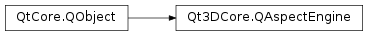

Qt3DCore.QAspectEngine¶
Synopsis¶
Functions¶
- def
aspects() - def
executeCommand(command) - def
registerAspect(aspect) - def
registerAspect(name) - def
rootEntity() - def
setRootEntity(root) - def
unregisterAspect(aspect) - def
unregisterAspect(name)
Detailed Description¶
Responsible for handling all the
QAbstractAspectsubclasses that have been registered with the scene.The Qt3D run loop is controlled by the Qt3DRender::QAspectEngine.
Qt3DCore.QAbstractAspectsubclasses can be registered by calling Qt3DCore::QAspectEngine::registerAspect() which will take care of registering the aspect and in turn that will call Qt3DCore::QAbstractAspect::onRegistered();The simulation loop is launched as soon as a root
Qt3DCore.QEntityis set on theQt3DCore.QAspectEngine. This is followed by a call to onEngineStartup() on each aspect so that they can start their simulation work.The simulation loop is stopped when the root entity is set to Qt3DCore::QEntityPtr(). This calls onEngineShutdown() on each aspect so that they can stop performing their simulation work.
Setting a new valid root entity would restart the simulation loop again.
-
class
PySide2.Qt3DCore.Qt3DCore.QAspectEngine([parent=nullptr])¶ Parameters: parent – PySide2.QtCore.QObjectConstructs a new
QAspectEnginewithparent.
-
PySide2.Qt3DCore.Qt3DCore.QAspectEngine.aspects()¶ Return type: Returns the aspects owned by the aspect engine.
-
PySide2.Qt3DCore.Qt3DCore.QAspectEngine.executeCommand(command)¶ Parameters: command – unicode Return type: object Executes the given
commandon aspect engine. Valid commands are:- “list aspects”
Returns the reply for the command.
-
PySide2.Qt3DCore.Qt3DCore.QAspectEngine.registerAspect(name)¶ Parameters: name – unicode Registers a new aspect to the AspectManager based on its
nameUses the currently set aspect factory to create the actual aspect instance.
-
PySide2.Qt3DCore.Qt3DCore.QAspectEngine.registerAspect(aspect) Parameters: aspect – PySide2.Qt3DCore.Qt3DCore::QAbstractAspect* Registers a new
aspectto the AspectManager. TheQAspectEnginetakes * ownership of the aspect and will delete it when the aspect is unregistered.
-
PySide2.Qt3DCore.Qt3DCore.QAspectEngine.rootEntity()¶ Return type: PySide2.QtQuick.QSharedPointerReturns the root entity of the aspect engine.
See also
PySide2.Qt3DCore.Qt3DCore::QAspectEngine.setRootEntity()
-
PySide2.Qt3DCore.Qt3DCore.QAspectEngine.setRootEntity(root)¶ Parameters: root – PySide2.QtQuick.QSharedPointerSets the
rootentity for the aspect engine.See also
PySide2.Qt3DCore.Qt3DCore::QAspectEngine.rootEntity()
-
PySide2.Qt3DCore.Qt3DCore.QAspectEngine.unregisterAspect(aspect)¶ Parameters: aspect – PySide2.Qt3DCore.Qt3DCore::QAbstractAspectUnregisters and deletes the given
aspect.
-
PySide2.Qt3DCore.Qt3DCore.QAspectEngine.unregisterAspect(name) Parameters: name – unicode Unregisters and deletes the aspect with the given
name.
© 2018 The Qt Company Ltd. Documentation contributions included herein are the copyrights of their respective owners. The documentation provided herein is licensed under the terms of the GNU Free Documentation License version 1.3 as published by the Free Software Foundation. Qt and respective logos are trademarks of The Qt Company Ltd. in Finland and/or other countries worldwide. All other trademarks are property of their respective owners.